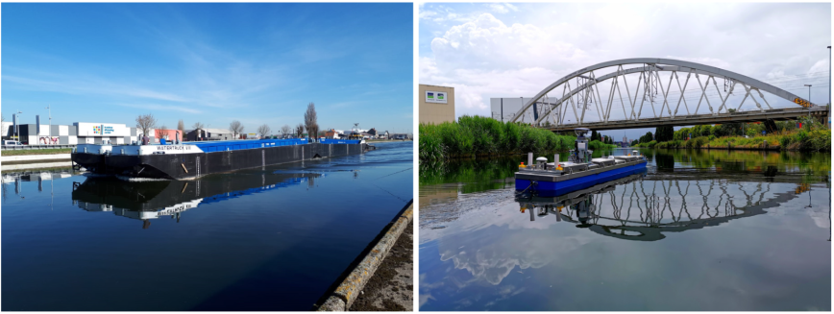
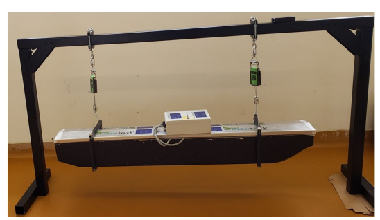

2023- Commencement of Research Seminar Series on Theme Engineering Innovations: Unveiling the Future at Sheffield Hallam University with the invited lecture from Dr Byung Cheol Min of Purdue University titled 'Integrating Human Intelligence into Robot Learning '.Link!
2023- Accepted presentation in the Teaching, Learning & Assessment Conference 2023 at Sheffield Hallam University titled Towards Digital Learning with ROS for Robotics using ‘The Construct’ organised on the theme 'Developing Digital Pedagogies and Practice'.Link!
2023- Invited to present a Research Seminar on the topic ‘Autonomy 4.0: A Control, Automation and Systems Engineering Perspective’ to the wider Department of Engineering and Mathematics at Sheffield Hallam University in the ongoing department research seminar series Link! on 'Control Engineering Advancements and Applications' in April 2023.
2023- Joined as an Assistant Professor in Automation, Control, and Systems Engineering at Sheffield Hallam University, United Kingdom from Hilary Term 2023.
2022- New Paper Published in area of USV Control: Link!
Research Interests
Education
Thesis Title: Cooperative Swarm Optimisation of Unmanned Surface Vehicles (Thesis Link)
Autonomous Marine Systems (AMS) Research Group School of Engineering
University of Plymouth
United Kingdom
Status: Associate Fellow of UK Higher Education Academy
University of Plymouth United Kingdom
Thesis Title: Design and Development of a Laboratory Underwater Glider (Thesis Link)
Department of Ocean Engineering Indian Institute of Technology- Madras, Chennai
India
School of Mechanical Engineering
SRM University, Chennai India
Experience
Role: Teaching, Research and External Academic Engagement (Control Engineering Subject Group)
Department of Engineering and Mathematics Sheffield Hallam University
United Kingdom
Role: Lead Coordinator and Manager for Research Track of "Self Configuring Assembly Systems"
Industrial Systems Engineering (ISyE) Research Group Gent University
Belgium
Role: Lead Researcher for the "Autonomous Inland Shipping" Projects
Intelligent Mobile Platform (IMP) Research Group KU Leuven
Belgium
Role: Lead Researcher for the "Robotic Sediment Sampling" Project (Project Webpage)
Smart Machine and Assistive Robotics Technology (SMART) Research Group Purdue University
United States of America
Role: Project Staff for the "Design of Experimental Setup for Electro Discharge Diamond Grinding" Project
Department of Mechanical Engineering Motilal Nehru National Institute of Technology- Allahabad
India
Role: Project Staff for the "Synthetic Jet for Underwater Vehicle Propulsion & Manoeuvering" Project
Department of Mechanical Engineering Indian Insititute of Technology- Kanpur
India
Projects
Funding Body: VLAIO (Vlaams Agentschap Innoveren & Ondernemen)- Flanders Innovation & Entrepreneurship
Role: Co-Coordinator from Industrial Systems Engineering (ISyE) Research Group Status: Running
Project Partners: ROB-KU Leuven, FlandersMake (ProductionS, CodesignS) Amount: ~2.7 M$
Responsbilities:
Funding Body: VIL (Vlaams Innoveren Logistics)- Flanders Innovation for Logistics
Role: Co-Coordinator from Industrial Systems Engineering (ISyE) Research Group Status: Running
Project Partners: VIL, IMEC-ID Lab (Research Partners); Boltzman, Faktion, GIS and Solvice (Industrial Partners) Amount: ~1.6 M$
Responsbilities:
Funding Body: VLAIO (Vlaams Agentschap Innoveren & Ondernemen)- Flanders Innovation & Entrepreneurship
Role: Lead Researcher from Intelligent Mobile Platforms(IMP) Research Group Status: Completed
Project Partners: ROB-KU Leuven, Royal Military Academy(RMA), IMEC-ID Lab (Research Partners); Tresco, dotOcean & DEME (Industrial Partners) Amount: ~1.6 M$
Responsbilities:

Figure: (a) CEMT-I Class Inland Vessel for Inland Transportation (b) Scaled Version of CEMT-I Class Vessel - Cogge (Source: IMP)
Funding Body: Ministry of Human Resource and Development (MHRD), India
Role: Researcher at Department of Ocean Engineering, IIT Madras Status: Completed
Project Partners: Department of Ocean Engineering, IIT Madras Amount: ~4K$
Responsbilities:

Figure: CFD Study, hydrodynamical modelling and experimental validation of the designed laboratory underwater glider
International Projects
Funding Body: Horizon 2020 European Union
Role: Co-Researcher from Intelligent Mobile Platforms(IMP) Research Group Status: Completed
Project Partners: Sintef Ocean AS, Sintef AS(Research Partners); Konsberg Seatex AS, Mampaey Offshore Industries AS (Industrial Partners) Amount: ~3.5 M$
Responsbilities:
Development of a safer and efficient navigation aid on the accuracy and safety performance of shore-based ship handlers to improve their situational awareness (Source: IMP)
Funding Body: Universidad Nacional de San Agustín de Arequipa (UNSA), Peru and Government of Peru
Role: Lead Researcher & Coordinator from SMART Research Group Status: Completed
Project Partners: UNSA & Purdue University Amount: ~365K$
Responsbilities:
Testing and Validation of developed underwater sediment sampling approach using a unmanned surface vehicle and a Van-Veen Grab sampler for agricultural waterbodies in Peruvian highlands (Source: SMART Lab)
Funding Body: Department for International Development (DFID), United Kingdom
Role: PhD Researcher from Autonomous Marine Systems (AMS) Research Group Status: Completed
Project Partners: Commonwealth Scholarship Commission (CSC) and University of Plymouth Amount: ~80K$
Responsbilities:

Figure: Hybrid framework for the cooperative navigation of a swarm of ASVs to enable optimal and autonomous operation in a practical maritime environment.
Teaching
United Kingdom- University of Plymouth (Overall Teaching Hours:160)
| Course Name | Duration and Target Students | Roles and Responsibilities |
|---|---|---|
| Fundamentals of Robotic Manipulators |
|
Role: Demonstrator and Lecturer
|
| Robotics and Control Theory |
|
Role: Demonstrator
|
| Introduction to Robotics |
|
Role: Demonstrator
|
| Basic Electrical Principles |
|
Role: Teaching Assistant
|
| Robotics and Control Theory |
|
Role: Demonstrator
|
Sheffield Hallam University (Overall Teaching Hours:1900)
| Course Name | Duration and Target Students | Roles and Responsibilities |
|---|---|---|
| Mechatronics and Automated Systems |
|
Role: Module Leader
|
| Control of Linear Systems |
|
Role: Module Leader
|
| Control and Instrumentation for Aerospace |
|
Role: Instructor, Lecturer and Module Co-Lead
|
Advanced Control Methods |
|
Role: Instructor, Lecturer and Module Co-Lead
|
Advanced Railway Engineering |
|
Role: Lecturer and Instructor
|
Student Guidance
Masters ThesisRole: Advisor 2023 (Sheffield Hallam University, United Kingdom): Three Students on Topics of Robotics, Automation and Control Engineering
Role: Co- Advisor 2020 (KU Leuven, Belgium): Luk Leemans (Graduated) & Yentl Michels (Graduated; Pursuing second masters at KU Leuven, Belgium)
The goal of this thesis was the design, build and installation of a bow thruster on a 1/25 scale model of a Watertruck+ self-propelling barge. The CAD model was validated with Bifilar experiments followed by outdoor experiments for different path following scenarios.
|
 Bifilar Pendulum Test to determine Moment of Inertia |
Path following experiment using a remote control for a straight line scenario |
PhD Students
Role: Mentoring 2019 (Purdue University): Dr. Tamzidul Mina (Graduated; Currently working at Sandia NL- USA), Shyam Sundar Kannan (Pursuing), Dr. Jun Han Bae(Graduated; Currently postdoc at University of Illinois Urbana-Champaign) and Dr. Shaocheng Luo (Graduated; Currently postdoc at University of Alberta, Canada)
A Multi-USV framework for Navigation and Guidance of USVs was developed with Dr. Tamzidul Mina selected for IEEE OES Student Poster Competition (20 abstracts selected globally) with award of Student Travel Grant to present the work in IEEE OCEANS 2019 Seattle (Source: SMART Lab)
A conceptual framework for monitoring the oil spill in harbours was developed with Dr. Shaocheng Luo using concepts of coverage path planning and remote sensing technology and work was presented in IEEE OCEANS 2019 Seattle (Source: SMART Lab)

Role: Mentoring 2019 (Purdue University): Pou Hei Chan (Pursuing) and Yuta Haoshi (Graduated; Currently a masters student at Carnegie Mellon University, USA)
Role: Advisor 2023 (Sheffield Hallam University): 3 Undergraduate Students from Mechanical Engineering
Administrative Duties
Academic Year 2022-2023Role: Academic Advisor for 35 students
Role: Work Experience Mentor for 9 students
Role: Open Day Coordinator- Robotics & Control Lab
Role: Second Examiner - 2 MSc Thesis
Research Groups Affiliation
Publications
Most Cited PublicationsAll my publications and their research impact can be found on: Google Scholar
Contact
I am always looking foward to collaborations, joint publications and joint project submissions on maritime challenges of future within European and International funding calls. You can send your initial thoughts here and we can take it further from this point for a fruitful end point:
(Powered by Un-static Forms)